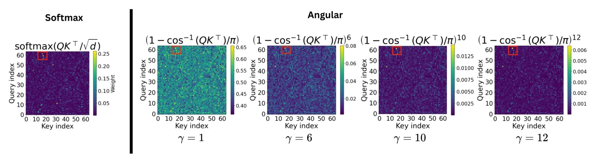
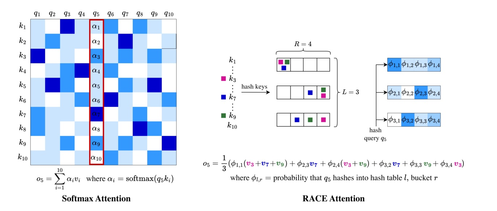
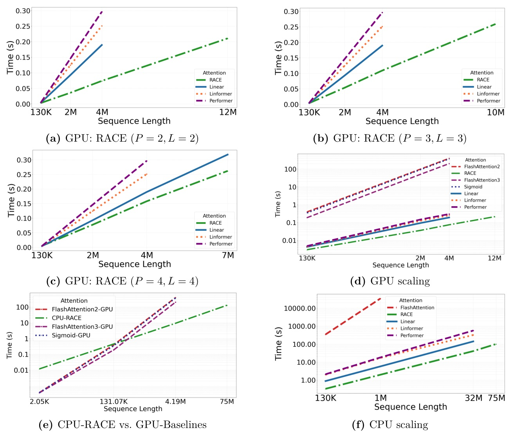
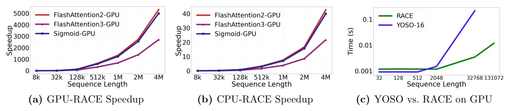
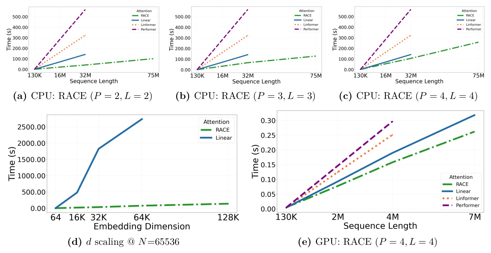
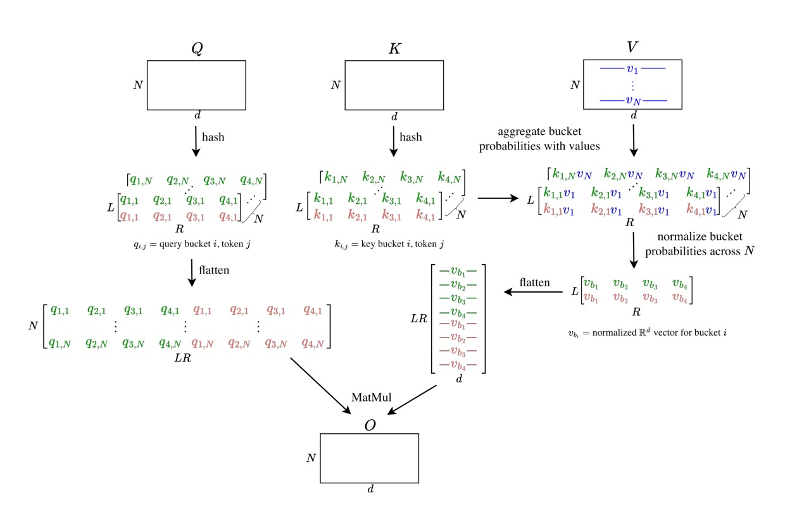

A strictly linear-time attention layer for outrageously large contexts
Full paper title: RACE Attention: A Strictly Linear-Time Attention Layer for Training on Outrageously Large Contexts
不要再算 N x N。
把注意力變成 LSH bucket 統計量。
Attention 的充分統計量
不需要 N x N score matrix。


P 決定「想要多尖」。
beta 決定「soft hash 有多偏」。
L 決定「隨機估計有多穩」。
| Method | Train / epoch | Test / epoch | Accuracy |
|---|---|---|---|
| RACE P=3,L=3 | 584s | 22.5s | 97.92% |
| FlashAttention2 | 1645s | 47s | 97.0% |
| Performer-256 | 952s | 35s | 96.61% |
| Linear | 591s | 22.8s | 96.35% |
A100 GPU; Table reports per-epoch seconds and accuracy.


At approximately 4M tokens in the paper's single-layer GH200 setup; RACE reaches 12M tokens.
| Method | CIFAR-10 | QNLI | Tiny Stories PPL |
|---|---|---|---|
| RACE P=4,L=4 | 65.9 | 61.1 | 2.6 |
| FlashAttention2 | 61.44 | 61.1 | 2.7 |
| Angular gamma=8 | 61.69 | 61.7 | 2.5 |
| Performer-256 | 64.9 | 61.0 | 10.0 |
CIFAR-10 @1024, QNLI @2048, Tiny Stories @1024; metrics are not a single unified task.

Right algorithm beats
hardware acceleration.
SUPPORTED
NOT YET SHOWN
RACE avoids explicitly approximating the N x N attention matrix ... [and] sketches the sufficient statistics needed to compute attention outputs directly in linear time.
RACE 不直接近似 N x N 注意力矩陣；它 sketch 出直接計算注意力輸出所需的充分統計量，因此可以線性時間運作。§3.2 p.7
The bound decomposes into a bias term O(P/beta) and a variance term O(sqrt(log(N/delta)/L)).
誤差界拆成由 P/beta 主導的偏差項，以及由 L 主導的方差項。§3.3 p.8

A differentiable LSH sketch turns long-context attention into a controlled approximation problem.